The Legal Shield
Act 5: Legal + Governance + IP · 35 illustrations
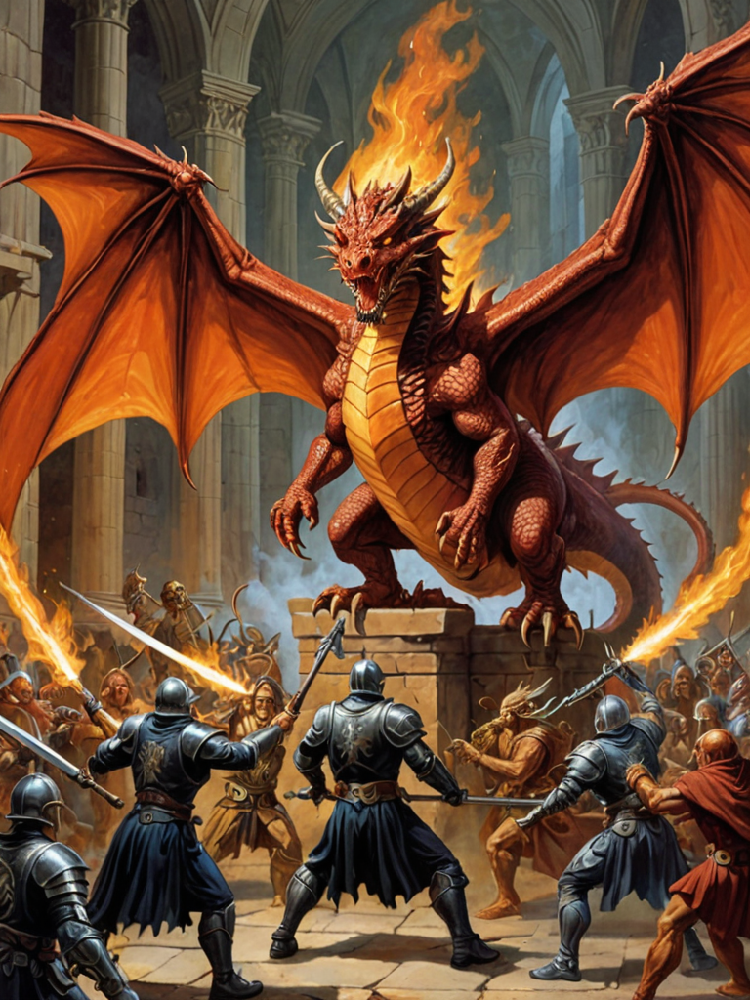
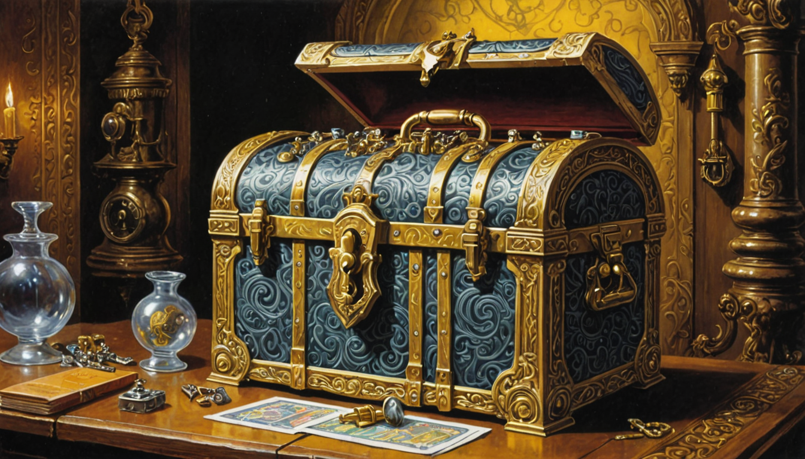
What Investors Receive
· At signing: A SAFE — a contractual right to receive preferred stock in the future when a priced round (Series A) closes.
· At conversion: Preferred shares in Sovereign Survival Kit Inc. (Delaware C-Corp) calculated by dividing the investment amount by the lower of (a) the valuation cap price or (b) the Series A price.
· No board seats. Investors receive information rights and, for qualifying checks, pro-rata participation rights in subsequent rounds.
· No governance over the DAO or Trust. Investment is in the C-Corp only. The Wyoming DAO LLC and Nevada Irrevocable Trust are separate legal entities not subject to investor governance.
Architectural note: The zero-egress architecture requires singular sovereign authority over design decisions — control that cannot be fragmented, delegated to committee, or overridden by shareholder vote. During the founder's lifetime, that authority is vested in the founder. Upon succession, it transfers whole to the Nevada Irrevocable Trust. See §5.
§ 1. Seed Round — Post-Money SAFEWhat Series A Investors Receive
· Preferred shares in Sovereign Survival Kit Inc. (Delaware C-Corp) with 1x liquidation preference. Shares are converted from the founder's Class B allocation — the fixed pool of 10,000,000 shares does not increase.
· Information rights (annual reviewed financials).
· Observer seat on the board — not a voting seat. Founder retains majority board control. See Board and Governance.
· Immutable charter constraints protect all shareholders equally. See Board and Governance §4.
§ 2. Series A — Priced Preferred Round (Target M18)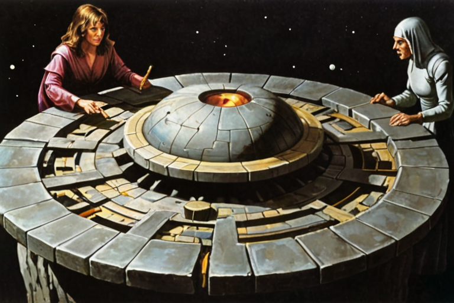
Full legal/IP breakdown in Legal Budget Breakdown. Individual compensation detail in Financial Model §7.
>
Payroll: Funds a 3-person founding team (Founder/CEO, Technical Lead Manager, COO). Fractional CFO and GC retained in Y2.
>
Compensation structure: Employees receive cash compensation plus spark grants equivalent to typical options value — no equity grants, no options. The Nevada Irrevocable Trust is a separate vehicle; its membership is at the founder's sole and absolute discretion and is not subject to investor inquiry. No option pool exists. This preserves the clean 93/7 cap table.
>
§ 4. Use of Seed Proceeds ($3M — ~18-Month Runway)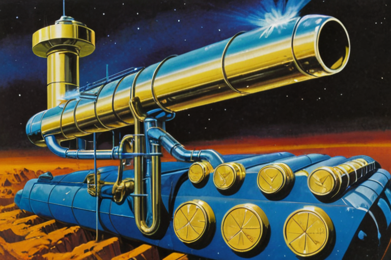
Sovereign Survival Kit is architecturally a sovereign, edge-first platform. The .kasset minting process requires zero network egress — the ML-DSA-65 post-quantum signature proves that each asset was generated locally and is unaltered. If any party — investor, board member, or regulator — can compel a design change that introduces a network path into the core processing environment, the cryptographic provenance chain breaks, the signature is void, and the product has no value proposition. The founder's absolute control over the company is therefore not a preference — it is a structural requirement of the product itself.
· Fixed share pool: The charter permanently fixes the authorized share count at 10,000,000. No new shares may ever be created. Future equity rounds are funded by the founder voluntarily converting Class B shares to the applicable preferred class. The total never changes. See Board and Governance §4.
· Dual-class stock: The founder holds Class B shares with 20x voting rights (Lyft precedent). All investor shares are Class A (1x voting). At 93% ownership post-seed, the founder holds 99.6% of all votes. Under the fixed-pool model, the founder retains >95% vote control even at <60% economic ownership. No combination of investors across any number of rounds can outvote the founder.
· No sunset provision. The dual-class structure is permanent and does not expire based on time, transfer, or IPO. This is consistent with Alphabet, Meta, and Snap, none of which have voting sunsets.
· The OpenAI cautionary case. The contemporaneous Altman v. Musk litigation (2025-2026) demonstrates exactly what happens when governance structure allows investors and board members to override a founder's architectural vision — OpenAI's conversion from non-profit to capped-profit to for-profit restructured the entity's mission under investor pressure. SSK's governance is designed to make that outcome structurally impossible. The airgap cannot be removed by board vote because the charter codifies it as an irrevocable constraint.
· Board majority: Founder holds both voting board seats at all stages through Series A. The Series A observer seat is non-voting. See Board and Governance.
§ 5. Founder Control Provisions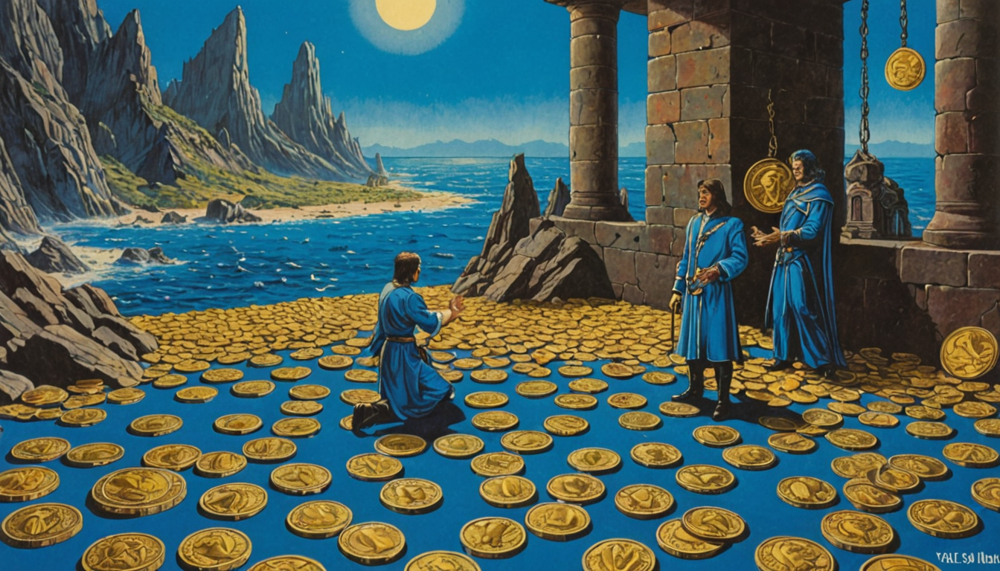
700,000 shares authorized but unissued, reserved for SAFE conversion at the first priced equity round. Post-money SAFE commits 7.0% dilution at conversion.
Notes:
· Class B shares carry 20x voting rights per share (Lyft precedent). See Investor Terms §5.
· No option pool. All employee compensation is non-dilutive — cash salary plus spark grants. See §5 below.
· No prior investors. No angels. No advisor equity grants. Clean cap table.
§ 1. Pre-Seed (Current State)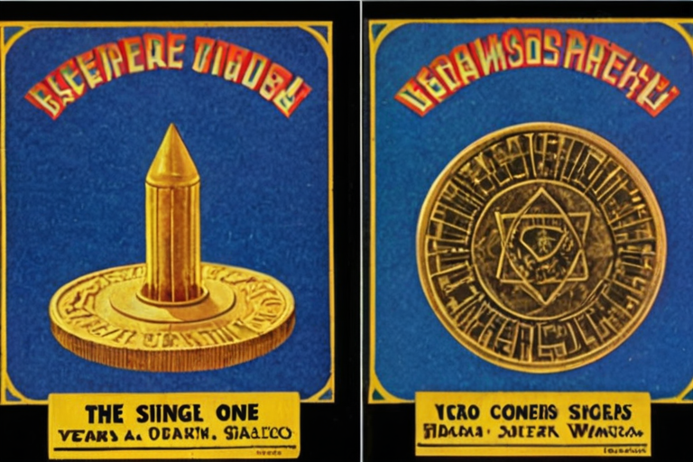
The $3M seed is raised via a YC Standard Post-Money SAFE with a $42.86M post-money valuation cap. SAFEs convert into preferred stock at the first priced equity round of ≥$1M.
Derivation:
· Post-money cap: $42,857,143 (~$42.86M)
· Investor ownership: $3,000,000 / $42,857,143 = 7.0%
· Founder retention: 100% − 7.0% = 93.0%
· Price per share: $42,857,143 / 10,000,000 = $4.286
§ 2. Post-Seed: SAFE Conversion at First Priced Round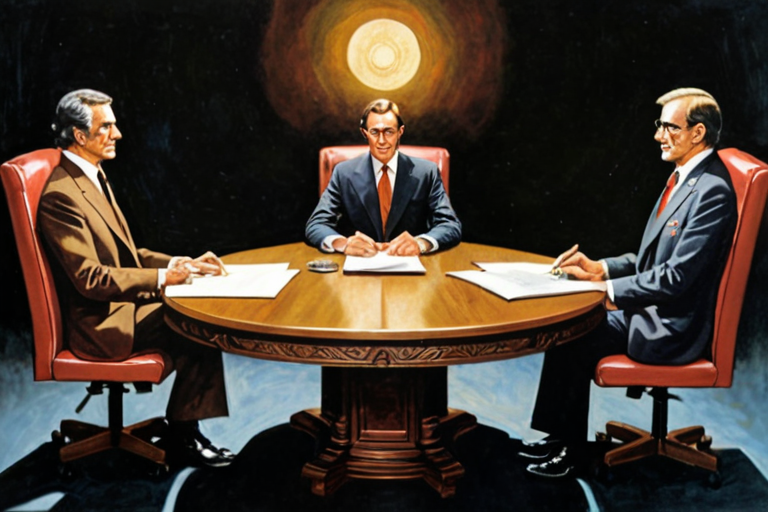
Traditional startups reserve 15-20% for employee stock options. Sovereign Survival Kit does not, for two reasons:
Spark grants replace equity incentives. Employees receive cash-settled performance grants equivalent to typical options value, providing economic upside without diluting the cap table or requiring 409A valuations. See Investor Terms §4.
Cap table purity is an investor signal. A clean, undiluted cap table with 93% founder ownership demonstrates conviction, capital efficiency, and alignment. There is no dead equity. Every share is held by someone with direct skin in the game.
§ 5. Why No Option Pool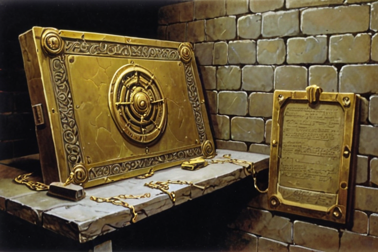
The following are separate legal entities with no equity relationship to Sovereign Survival Kit Inc.:
Investors in Sovereign Survival Kit Inc. have no claim, visibility, or governance rights over the DAO or Trust.
Revenue architecture: All platform revenue, including the progressive network fee on .kasset trades, flows exclusively through the C-Corp. Shareholder distributions are pro-rata. The founder's distributions flow to the Nevada Irrevocable Trust. No platform revenue may be routed directly to the DAO or Trust in a manner that bypasses the C-Corp and its shareholders. Binding covenant language to be included in the Investor Rights Agreement.
§ 6. Entities NOT On This Cap Table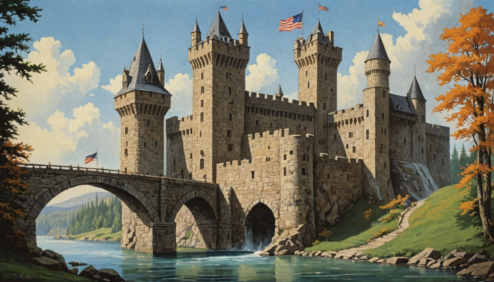
Total voting seats: 2
Founder control: Absolute. The founder holds Seat 1 permanently and appoints/removes Seat 2 at will. In the event of disagreement, Seat 2's dissent is recorded in board minutes — the outcome is not affected. The founder may appoint a proxy for day-to-day decision-making but cannot resign the chairmanship.
Succession
Upon the founder's incapacitation or death:
The Founder's Twin (Advisory Role): The twin does not hold a board seat — DGCL §141(b) requires directors to be natural persons. Instead, the twin serves as the architectural veto oracle: an irrevocable charter-level advisory function that reviews every board resolution for compliance with the immutable constraints (§4). If the twin determines that a proposed action would compromise the zero-egress security architecture, the .kasset provenance chain, or the fixed share pool, it issues a binding architectural veto. The veto is not a board vote — it is a charter enforcement mechanism. The proposed action is permanently abandoned, and the board must formulate a new plan that satisfies the constraint. This covenant is irrevocably codified in the C-Corp charter and cannot be amended, overridden, or removed by any board action, shareholder vote, or merger.
§ 1. Board CompositionObserver access: The observer may review advance board materials (agenda, financials, draft resolutions) in a Vault SCIF. No copies may be retained outside the SCIF. The Trust's representative receives the founder's twin as an Oracle for strategic counsel — the observer is not entitled to participate in or have visibility into those conversations.
Investors do not receive voting board seats at any stage. If an investor requires a board seat as a condition of investment, the deal is declined. Founder control is a technical requirement of the reference design, not a negotiating position.
§ 2. Investor Board Rights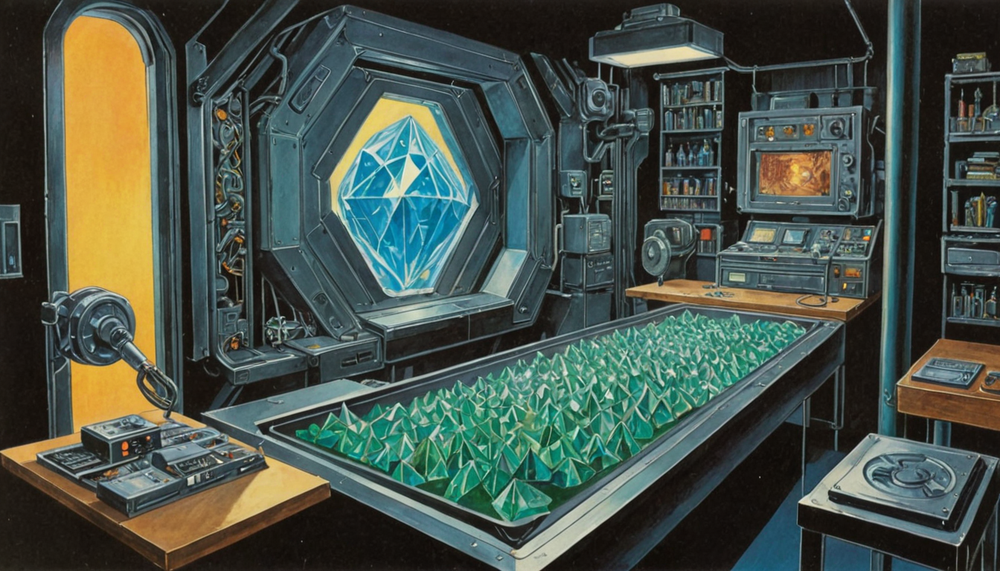
The Sovereign Survival Kit is not software. It is a reference design — its properties are immutable, and guaranteed by mathematics and physics. An individual's security and sovereignty cannot be impacted by committee, influenced by investor preference, or compromised by majority vote.
Long-term governance: At national-infrastructure scale, the board may evolve to require government-level oversight commensurate with SSK's role in supporting the United States. This is a charter amendment event, not a current-state provision.
§ 3. Governance Rationale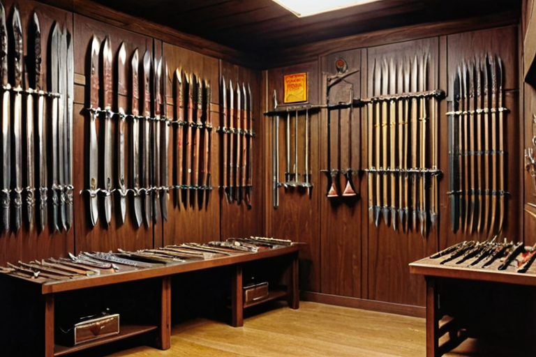
The following constraints are irrevocably codified in the C-Corp charter. They bind the founder, the board, and all future shareholders equally:
Fixed share pool. The authorized share count is permanently fixed at 10,000,000. No additional shares may be authorized, created, or reserved — by any board action, shareholder vote, or merger. Future equity financing rounds (Series A, B, C, etc.) are funded exclusively by the founder voluntarily converting Class B shares to the applicable preferred class. The 10,000,000 total never changes. The founder's 20x voting rights on remaining Class B shares ensure absolute governance control through any number of rounds.
No network egress. No corporate action may compel the introduction of network egress into the core processing environment. The reference design is airgapped by definition.
Architectural veto covenant. The founder's twin serves as a charter-level architectural oracle. Any proposed board action that would violate constraints (1) or (2) — or compromise the .kasset provenance chain — is subject to a binding veto that cannot be overridden. This covenant survives the founder's death and is enforceable by the Trust as charter beneficiary.
§ 4. Immutable Constraints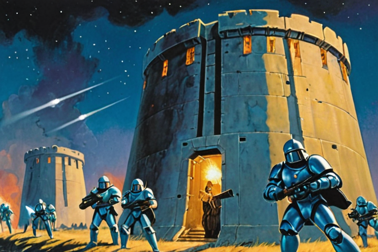
To mitigate regulatory risk while maximizing venture investability, Sovereign Survival Kit is structured across three distinct jurisdictions:
A. Sovereign Survival Kit Inc. (Delaware C-Corp)
· Purpose: The corporate entity that publishes and maintains the sovereign reference design.
· Assets Held:
· Proprietary Intellectual Property
· Trademarks for "Sovereign Survival Kit", ".kasset mint".
§ 1. Geographic Structuring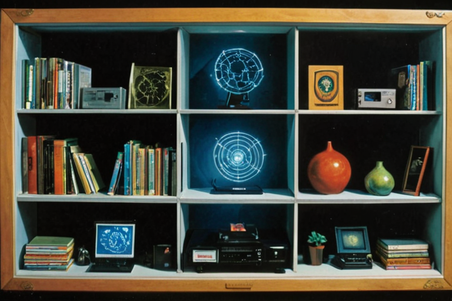
· Status: Pending. The C-Corp is not yet incorporated. Upon incorporation, the founder will execute a full IP assignment transferring all intellectual property — with no carve-outs or retained rights — to Sovereign Survival Kit Inc.
· Future Hires: Each employee will execute a PIIAA upon onboarding, assigning all work product to the C-Corp.
§ 2. PIIAA (Proprietary Information and Inventions Assignment Agreement)· The Legal Stance: "We cannot hand over what we physically cannot access."
· Mechanism: Because the reference design operates with hard-coded network airgaps and stores all data in AES-256-GCM encrypted .kassets secured by the user's physical hardware enclave, Sovereign Survival Kit Inc. is structurally unable to comply with a data subpoena.
· Result: Sovereign Survival Kit is structurally unable to suffer the primary legal threat facing all cloud-AI companies (data breach, PII theft, government dragnet surveillance).
§ 3. Liability Position: Zero-Egress by Design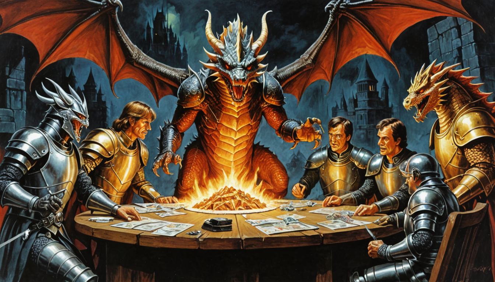
Upon incorporation, all intellectual property used in Sovereign Survival Kit will flow through a documented chain from origin to the C-Corp. This document traces each asset's provenance, license, and planned assignment status.
§ 1. Overview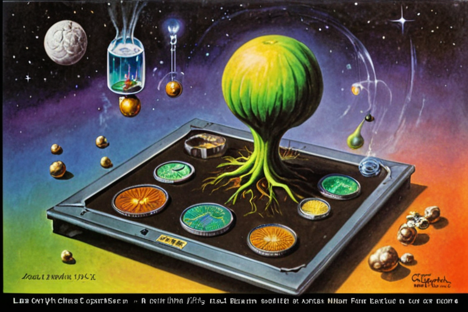
A. Reference Design Codebase
B. Know-Maps (iOS/macOS/visionOS NLU App)
C. TauSkeletonVisual (C++/Unreal Engine)
D. General Tau Theory (Mathematical Framework)
E. Gemma 4 E4B (Inference Model)
F. Gemma 4 E4B (Training Base)
§ 3. Detailed Asset Chain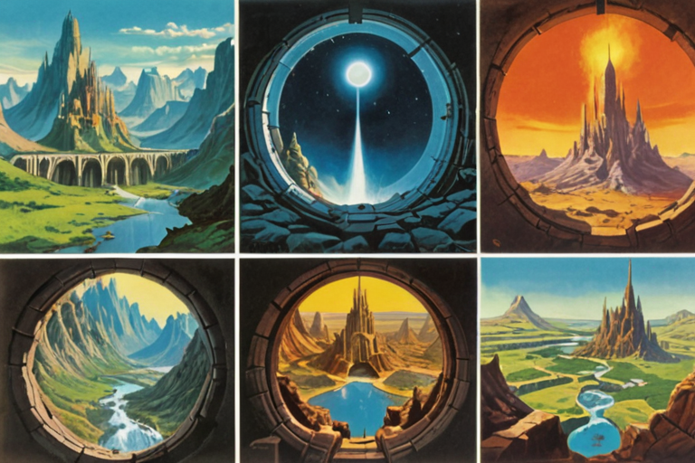
None. Upon incorporation, all intellectual property will be assigned to the C-Corp with no carve-outs or retained rights.
§ 4. Founder Retained Assetsclara-engine (AskMikeeHost) — Production Codebase
License: Proprietary (Sovereign Survival Kit Inc.)
Status: Fully audited, bug-fixed, 100% test passing
Model: Gemma 4 E4B (Google DeepMind 🇺🇸) — compliant with Model Origin Policy
#### Inference Layer (13 files, ~2,500 lines)
#### Profiling Pipeline (9 files, ~4,000 lines)
§ 1. SOFTWARE IP (Production Code)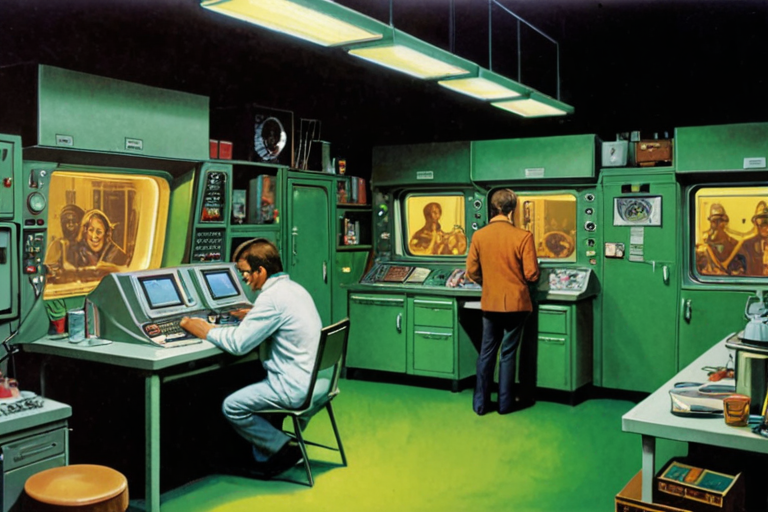
TauSkeletonVisual — C++ Research Code
License: CC-BY-NC-ND 4.0 (defensive IP — cannot be commercially used by competitors)
Status: Research-grade, requires migration to Apple Vision architecture
Volumetric Control Sphere — Hardware Architecture
License: Proprietary (Sovereign Survival Kit Inc.)
Status: Architectural design complete, awaiting EVT (Phase 2+ priority)
§ 2. SPATIAL COMPUTING IP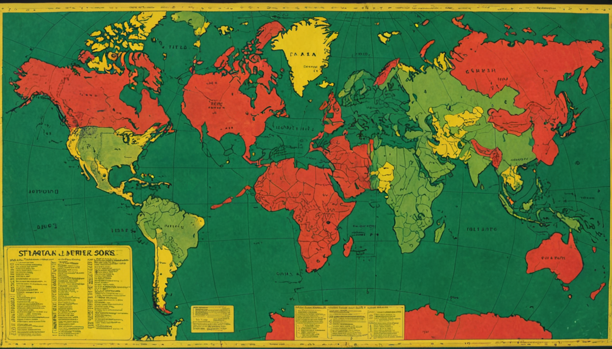
Sovereign Commerce Protocol
License: Open source (protocol), Proprietary (trust infrastructure)
Status: Design complete, bilateral protocol implementation pending
Removed from previous version:
· ~~Gold-Peg Oracle~~ → Replaced by σ conversion formula (energy-backed, not gold-backed)
· ~~Sovereign Settlement Chain~~ → Replaced by bilateral mesh settlement + notary certification
§ 4. PROTOCOL IP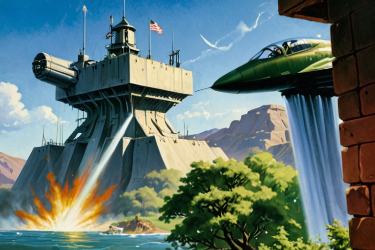
Note: Hardware manufacturing is NOT a Series A priority. The Compass and Black Box are supplementary products. SovSensor devices are Phase 2+ reference designs. The core platform runs on user-owned phones and laptops.
§ 5. HARDWARE IP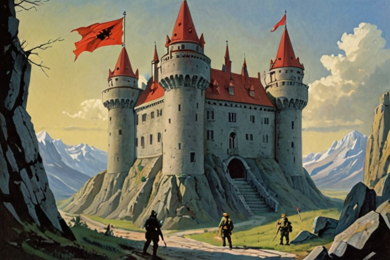
Open Source vs. Proprietary Split
SSOT: Doc 29 §8 (Source Code Licensing). Vault is open source; everything above the vault is proprietary.
§ 8. IP PROTECTION SUMMARY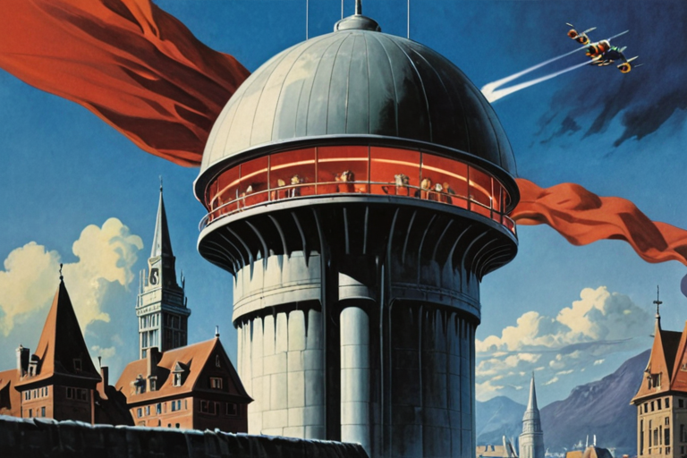
Web search conducted 2026-04-26. This is a preliminary screen, NOT a formal freedom-to-operate opinion. A patent attorney must conduct a formal USPTO/WIPO/EPO search with proper classification codes (CPC/IPC) before any filing.
Doc 21 Claims (10 Formal)
Additional Candidates (7 Defensible)
Removed from Candidate List
Summary
§ 9. PRELIMINARY PRIOR ART SCREEN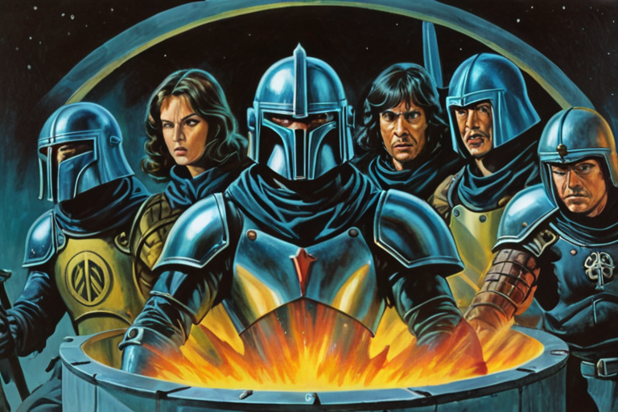
A localized software operating environment comprising:
A hardware-isolated host node maintaining a strict network airgap via software locks blocking all egress external network requests.
A local LLM inference engine restricted within a memory-managed envelope, utilizing lock-based phase transitions to prevent OOM termination.
A module generating a Directed Acyclic Graph (DAG) of conversational reasoning.
An operation that serializes said DAG, filters it through a proprietary NLP PII-stripping module operating locally, and encrypts the output via AES-256-GCM, dual-signed by (a) a hardware-bound P-256 ECDSA signature generated inside the device hardware security module proving the asset was signed on a specific physical device, and (b) a software-generated ML-DSA-65 post-quantum signature ensuring resilience against future quantum cryptanalysis. Neither signature alone is sufficient; the combination proves both physical device provenance and quantum-resistant integrity.
§ CLAIM 1: The .kasset Minting PipelineA method for intent detection via spatial computing, characterized by:
Extracting visual depth and coordinate metrics via native device frameworks.
Applying General Tau Theory ($\tau$ and $\dot{\tau}$) to map the approach velocity and gesture intent within a physically constrained virtual bounding box around the user.
Translating said localized vectors entirely to a local web socket loopback without utilizing external rendering clouds.
§ CLAIM 2: Volumetric Control Sphere (Tau Theory Mapping)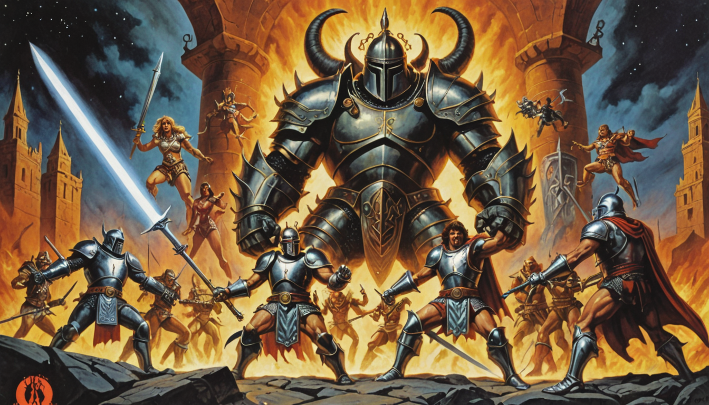
A method for dynamically curating a language model's context window, comprising:
Segmenting continuous user experience into discrete episodes via temporal, semantic, emotional, and domain boundary detection.
Compressing each episode into a sparse representation via a learned compressor model operating within a fixed VRAM budget.
On each conversational turn, rewriting the user's query using conversation history, then retrieving relevant episodes via vector similarity search combined with a situational context vector computed from biometric state, temporal position, and domain-specific state registers.
Proactively surfacing episodes the user has not explicitly requested but which the anticipatory retrieval engine determines are relevant to the user's current cognitive context based on low overlap with recent conversational history and high similarity to the computed context vector.
All retrieval, compression, context assembly, and generation occurring entirely within a network-isolated compute environment.
§ CLAIM 4: Dynamic Context Window Assembly with Episodic Memory Encoding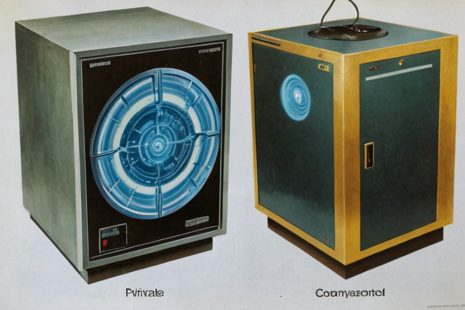
A method for developing a private communication protocol between a human user and a personal AI agent, comprising:
A multi-stage fine-tuning pipeline (SCP → DPO → E2E) establishing a baseline personality and communication style.
An ongoing fourth stage that ingests compressed conversational shorthand, shared vocabulary, emotional calibration patterns, and disagreement resolution sequences from real interaction logs.
A learned mapping function (the "Idiolect") that translates a collection of time constants (tau profiles) representing the user's cognitive dynamics into semantic weight modifications for a base language model, such that the mapping function — not static weight matrices — is the computational representation of the user's personality.
Storage of the Idiolect mapping function and the tau collection as cryptographically separated components, wherein the tau collection encodes process dynamics (decision tempo, cognitive rhythm, approach patterns) without encoding content (names, facts, personal history), and the Idiolect mapping function is the sole component that renders the tau collection semantically meaningful.
A drift detection module monitoring the evolution of shared vocabulary and emotional shorthand over time to prevent unintended persona divergence.
§ CLAIM 5: Idiolect Evolution Engine with Tau-Secured Weight Representation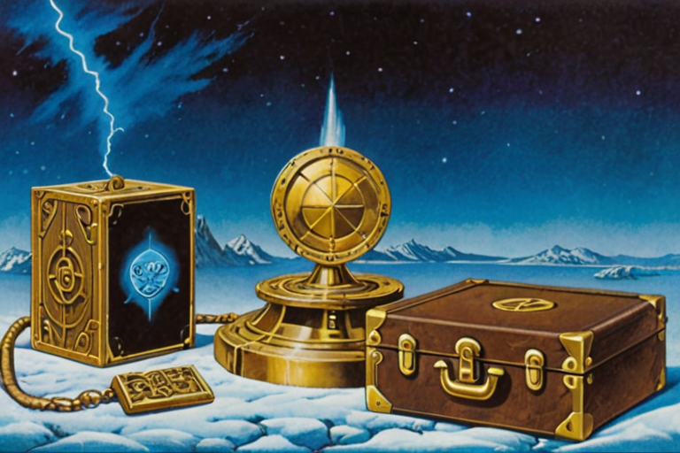
A system for ingesting physical-world biometric and environmental data into a personal AI planning engine, comprising:
An open BLE GATT protocol (SovSensor) transmitting standardized JSON sensor readings from edge peripherals (breath composition, heart rate variability, ambient air quality, light exposure, body composition, asset proximity).
Local storage of all sensor data in an AES-256-GCM encrypted PII vault with zero network egress.
Integration of sensor-derived state variables into the AI agent's per-turn situational retrieval pipeline as domain-specific context signals for 8 life domains (rest, nourishment, body, shelter, assets, income, bonds, growth).
All sensor data processing, storage, and AI planning occurring entirely on user-owned hardware.
§ CLAIM 6: Biometric Sensor Bridge Protocol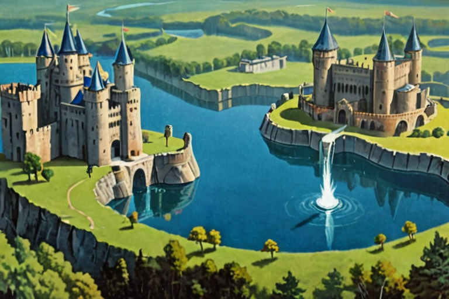
A system for extracting and contributing factual knowledge from a deceased user's private data vault to a shared knowledge repository, comprising:
A biometric death certification mechanism triggered by the failure of the deadman's switch (multi-device heartbeat timeout exceeding a minimum floor of ≥180 days), cryptographically verified by the user's hardware security module.
A multi-pass PII stripping pipeline operating entirely on-device, comprising: (a) Named Entity Recognition (NER) for explicit PII (names, SSNs, addresses, dates of birth), (b) regex-based pattern matching for structured identifiers, (c) LLM-based contextual review for implied PII (location-correlated descriptions, medical context, behavioral patterns identifiable via Sweeney re-identification), and (d) a confidence threshold gate requiring ≥0.95 confidence that a fact is PII-free before contribution.
A differential privacy budget (ε) applied to all contributed facts, ensuring that no individual fact — alone or in combination with other contributed facts — can be used to re-identify the deceased user. The privacy budget is calibrated per-domain (medical ε ≤ 0.1, financial ε ≤ 0.5, general knowledge ε ≤ 1.0).
Compulsory contribution of verified, PII-stripped factual knowledge to the Common Knowledge Codex, a shared repository accessible to all network participants.
A post-contribution redaction protocol enabling network governance to flag and suppress specific Codex entries if PII is discovered after contribution, without deleting the underlying factual content.
§ CLAIM 7: Mortality-Triggered Differential Privacy Pipeline for Compulsory Knowledge Contribution